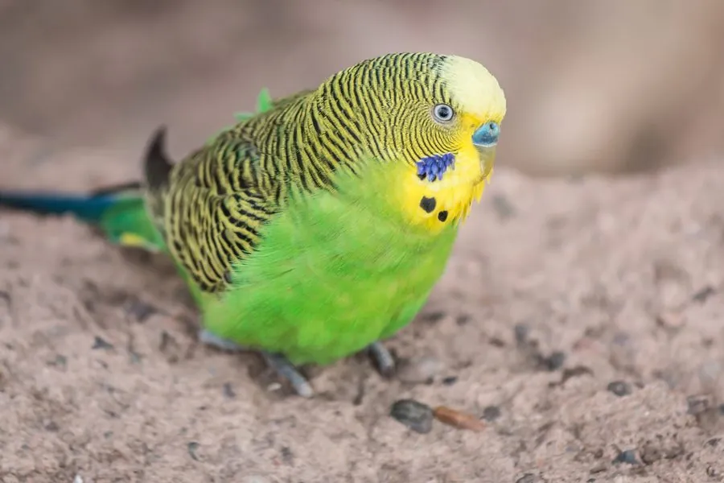

鸟类 · 动物界
虎皮鹦鹉 Melopsittacus undulatus

原产澳大利亚内陆的小型鹦鹉，背羽布满黑白波浪状细纹，是世界上最常见的笼养鸟之一，群飞时声势浩大。
- 分类
- 门脊索动物门纲鸟纲目鹦形目科鹦鹉科属虎皮鹦鹉属
- 栖息环境
- 澳大利亚内陆的干旱草原、灌丛与河岸林地，常靠近水源活动
- 地理分布
- 澳大利亚内陆大部分地区，作为宠物被饲养于世界各地，中国无野生种群
- 保护级别
- IUCN 无危（LC）；澳大利亚特有种，中国无野生分布
物种志
虎皮鹦鹉体长 18–20 cm，体重 30–40 g，是体型最小的鹦鹉之一。野生型羽色为黄绿相间：头部和面部呈黄色，背部和翅膀为绿色并布满黑色波浪状细纹，腰部及尾羽呈蓝色，喉部有数个黑色斑点，因此得名“虎皮”。人工培育的个体还有蓝、白、黄、灰等上百种羽色变异。
虎皮鹦鹉原产于澳大利亚内陆的干旱草原、灌丛和河岸林地，没有固定巢址，会随降雨和食物资源在广阔的内陆地区游荡，成群活动时鸣声嘈杂。它们以草籽和谷物为主食，也吃嫩芽和少量昆虫。在繁殖条件合适时，它们会在树洞中营巢，每窝产卵 4–8 枚，孵化 18–21 天，雏鸟约 30 天离巢。由于适应力强、容易饲养，虎皮鹦鹉成为全球最普遍的宠物鸟之一，野生种群数量稳定，被世界自然保护联盟评为无危。
形态与习性
- 食性以草籽和谷物为主，也吃嫩芽和少量昆虫
- 体长18–20 cm
- 体重30–40 g
- 繁殖每窝 4–8 枚卵，孵化 18–21 天
- 寿命野生约 4–6 年，笼养可超过 10 年
- 羽色野生型黄绿配黑色波浪纹，人工培育有蓝、白、黄等变型
趣味知识
- 虎皮鹦鹉的“虎皮”指背部和翅膀上的黑色波浪纹，野生型羽色其实是黄绿相间。
- 它们在野外没有固定巢址，会随降雨和食物在澳大利亚内陆大范围游荡。
- 虎皮鹦鹉能模仿简单的人语和口哨，是学习能力较强的小型鹦鹉。
- 人工培育的虎皮鹦鹉羽色多达上百种，蓝、白、灰个体在野外并不存在。